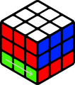
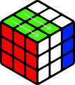
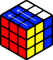

Центр |
Ребро |
Угол |
Язык вращений
Для того, чтобы понимать формулы, используемые для сборки, нужно ознакомиться с языком вращений.
Язык вращений – это особые обозначения движений граней кубика, при помощи который можно записать какой-либо алгоритм, решение или скрамбл (последовательность ходов, с помощью которой запутывают кубик).
F - front - фронтальная сторона
B - back - задняя сторона
L - left - левая сторона
R - right - правая сторона
U - up - верхняя сторона
D - down - нижняя сторона
Fw (f) - фронтальная сторона вместе со средним слоем
Bw (b) - задняя сторона вместе со средним слоем
Lw (l) - левая сторона вместе со средним слоем
Rw (r) - правая сторона вместе со средним слоем
Uw (u) - верхняя сторона вместе со средним слоем
Dw (d) - нижняя сторона вместе со средним слоем
Также существуют более редкие движения, которые практически никогда не используются в сборках:
M - middle - средний слой, находящийся между правой (R) и левой (L) сторонами
S - standing - средний слой, находящийся между фронтальной (F) и задней (B) сторонами
E - equatorial - средний слой, находящийся между верхней (U) и нижней (D) сторонами
Кроме вращений граней куба, существуют обозначения, указывающие на изменения положения кубика в пространстве. Эти движения называются перехватами:
x - весь куб вращается от себя по плоскости, совпадающей с правым (R) и левым (L) слоями (F превращается в U)
x' - весь куб вращается к себе по плоскости, совпадающей с правым (R) и левым (L) слоями (F превращается в D)
y - весь куб вращается по часовой стрелке в горизонтальной плоскости (F превращается в L)
y' - весь куб вращается против часовой стрелки в горизонтальной плоскости (F превращается в R)
z - весь куб вращается по часовой стрелке в фронтальной плоскости (U превращается в R)
z' - весь куб вращается против часовой стрелки в фронтальной плоскости (U превращается в L)
Движения кубика и перехваты записываются в соответствии со следующими правилами:
- Если написана только буква - крутим сторону по часовой стрелке, как если бы мы смотрели на грань в лицо
- Если после буквы стоит штрих «'» - крутим сторону против часовой стрелки, как если бы мы смотрели на грань в лицо
- Если после буквы стоит «2» - крутим эту сторону на 180 градусов. Если ещё стоит штрих, к примеру U2', то это означает, что в данном алгоритме удобнее вращать U2 против часовой стрелки
Наглядное пособие языка вращения
R |
R' |
R2 |
Rw |
Rw' |
L |
L' |
L2 |
Lw |
Lw' |
U |
U' |
U2 |
Uw |
Uw' |
|

D |
D' |
D2 |
Dw |
Dw' |
F |
F' |
F2 |

Fw |

Fw' |
B |
B' |

B2 |
Bw |
Bw' |
M |
M' |
M2 |
S |

S' |
S2 |
E |
E' |
E2 |

Начальное положение |
x |
x' |
x2 |

Начальное положение |
y |
y' |
y2 |
Начальное положение |
z |
z' |

z2 |
Как собрать
1 этап - сборка правильного креста
Итак, первый этап сборки кубика Рубика - сборка правильного креста на любой из сторон, для удобства мы будем собирать его на белой. Крест является правильным, если цвет реберных наклеек совпадает с цветом наклеек центров.

Правильный крест |
Неправильный крест |
Для удобства будем ставить элементы креста по одному. Для начала ставим белый центр наверх и на кубике находим 4 ребра с белым цветом: бело-красное, бело-оранжевое, бело-синее и бело-зеленое. После этого выбираем любое, его мы и будем ставить первым. У нас может возникнуть несколько ситуаций, каждая из которых рассмотрена на картинках ниже.
Если ребро стоит в среднем слое, то просто движениями R или L' ставим их к белому центру.
Но это место может оказаться уже занято другим ребром с белым цветом, поэтому мы должны отвести его в сторону при помощи поворотов U, U' или U2 и поставить нужное нам ребро уже знакомыми поворотами R или L'.
Если же ребро окажется на верхнем или нижнем слое, то движениями F или F' ставим их в средний слой и делаем R или L', как и до этого.
Также ребро может оказаться в нижнем слое и белым цветом смотреть вниз. В таком случае ставим свободное место наверху над ним и поднимаем ребро движением F2.
Таким образом нужно поставить к белому центру все 4 ребра.
|
Поднимаем нужный элемент наверх

R |
Поднимаем нужный элемент наверх

L' |
Освобождаем место и поднимаем наверх

U, U' или U2 + R |
Освобождаем место и поднимаем наверх

U, U' или U2 + L' |
|
Ставим элемент на средний слой и поднимаем наверх

F R или F' L' |
Ставим элемент на средний слой и поднимаем наверх

F' R или F L' |
Проверяем низ, подставляем свободный слот и поднимаем

F2 |
Поставив 4 ребра к своему центру, мы получим крест. Он может уже сейчас оказаться правильным, но в большинстве случаев этого не происходит, поэтому нужно эти ребра поменять между собой местами, чтобы он стал правильным.
Крутим верхний слой, пока 2 ребра не будут совпадать по цвету с центрами. Здесь может быть 2 ситуации: совпадают смежные ребра и нужно поменять местами 2 других или же совпадают противоположные ребра и нужно поменять местами оставшиеся. Оба случая рассмотрены на картинках ниже. На данном этапе нужно запомнить простой алгоритм R U R' U', называемый пиф-пафом, он еще окажется нам полезен.
|
На свои места встали смежные ребра
(R U R' U') R | Запоминаем: R U R' U' - пиф-паф |
На свои места встали противоположные ребра

R U2 R' U2 R |
2 этап - сборка первого слоя
После сборки правильного креста следует сборка первого слоя.

Собранный первый слой |
Собранный первый слой |
Находим один из четырех белых углов, находим место на нижнем слое, где этот уголок должен находиться (например, бело-красно-синий уголок должен стоят между синим и красным элементами креста), ставим найденный уголок над этим местом. Ниже рассмотрены все случаи, которые могут выпасть на данном этапе. Выполнив алгоритм, мы поставим уголок на свое место. Подобным образом ставим оставшиеся три. Обращаем ваше внимание на случаи, когда белый угол находится не на верхнем слое, а внизу.
|
Белый смотрит на нас

5 пиф-пафов |
Белый смотрит в сторону
1 пиф-паф |
Белый смотрит вверх

3 пиф-пафа |
|
Белый внизу и смотрит на нас
4 пиф-пафа |
Белый внизу и смотрит вправо
2 пиф-пафа |
Затычка
Пиф-паф и одна из ситуаций |
3 этап - сборка второго слоя
На данном этапе собираем второй слой. Для этого необходимо найти 4 ребра и поставить их на свои места между центрами второго (среднего) слоя.
Собранный второй слой |

Собранный второй слой |
Как уже было сказано выше, находим 4 ребра без желтого цвета. Выбираем на верхнем слое одно, которое будем ставить первым, и крутим верхнюю грань до тех пор, пока одна из наклеек этого ребра не совпадет по цвету с центром. Далее получаем одну из ситуаций. Как и в предыдущем этапе, элементы могу оказаться не на верхнем слое, а ниже, эти ситуации также рассмотрены.
|
Алгоритм “Направо”
U R U' R' F R' F' R |
Алгоритм “Налево”
U' L' U L F' L F L' |
|
Паритет

“Направо” U2 “Направо” |
Затычка
“Направо” и одна из первых двух ситуаций |
4 этап - сборка желтого креста
На этапе сборки желтого креста может быть всего лишь 3 ситуации, решив которые, мы его получим. Также нам может повезти, если желтый крест соберется сам.
|
Палка

F R U R' U' F' |
Галка

F U R U' R' F' |
Точка

“Палка” U2 “Галка” |
Крест собран
- |
5 этап - сборка желтой стороны
После того, как собран желтый крест, нам может выпасть 7 ситуаций, для каждой из которых придется запомнить свой алгоритм, чтобы собрать желтую сторону.
|
Правая рыбка

R U R' U R U2 R' |
Левая рыбка

R U2 R' U' R U' R' |
Глаза
“Л.рыбка” U' “П.рыбка” |
Уши
“Л.рыбка” U “П.рыбка” |
|
Восьмёрка

“Л.рыбка” U2 “П.рыбка” |
Двойные глаза

“П.рыбка” 2 раза |
Вертолёт
“П.рыбка” U’ “П.рыбка” |
Сторона собрана

-------------- |
6 этап - сборка углов верхнего слоя
Выбираем любой уголок и движениями U, U' и U2 ставим его на свое место, чтобы оба цвета угла совпали с двумя цветами на нижних слоях. В зависимости от полученной ситуации, делаем один из алгоритмов. Обращаем внимание, что они делаюся из другого положения, поэтому нужно взять кубик белым цветом к себе.
|
Глаза справа
R2 D2 R U R' D2 R U' R |
Глаз справа нет

“Глаза справа” два раза или R' U R' D2 R U' R' D2 R2 |
Могут возникнуть 2 дополнительные ситуации:
1. Уголок встал на свое место, но рядом с ним на свое место встал еще один. Продолжаем крутить верхнюю грань, следя теперь за другим несобранным уголком. Он уже встанет так, как нужно в первых двух ситуациях.
2. Уголок встал на свое место, но по диагонали на свое место встал еще один. Берем кубик белым цветом к себе и делаем алгоритм “Глаза справа”. Выбираем любой уголок и ставим его на своё место. Теперь уже всё получится так, как нужно для первых двух ситуаций.
7 этап - сборка ребер верхнего слоя
Мы уже на финишной прямой! Осталось расставить ребра по своим местам. Снова ничего сложного, всего лишь 4 ситуации, для решения которых понадобится знать только один алгоритм.
|
Наклейка справа идет в левую грань

R U' R U R U R U’ R’ U’ R2 - Треугольник |
Наклейка справа идет на фронтальную грань
Треугольник 2 раза |
|
Саночки
Треугольник U’ Треугольник |
Крест сторон

Треугольник U Треугольник |